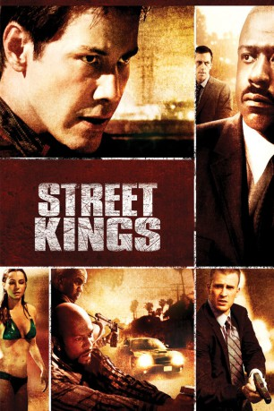

#1170 Street Kings
 
 IMDB-Wertung: 6.8 / 10
IMDB-Wertung: 6.8 / 10  Metascore: 55
Metascore: 55 
Detective Ludlow bringt Resultate, selten aber Überlebende vom Einsatz zurück. Als Gangsterkiller ist er längst im Visier der polizeiinternen Überwachung, wird aber von seinem Chef geschützt. Nachdem sein Ex-Partner als Spitzel enttarnt wird, sieht Ludlow rot, und gerät in eine Schießerei mit Ladendieben, die dem Maulwurf das Leben kostet. Dass es sich dabei um eine Hinrichtung handelt, deren Auftraggeber Polizeimarken tragen, lässt Ludlow elektrisiert Jagd auf die Mörder machen, bis sie und die Drahtzieher Gerechtigkeit durch die Kugel erfahren.
Jahr: 2008
Dauer: 109 Minuten
FSK: 18
Land: USA Studio: Fox Searchlight PicturesTonspuren: DTS - ,
Untertitel: Deutsch,
Auflösung: 1080p (1920x800) Größe: 5478 MB
Genre: Action, Krimi, Drama, Thriller
Regisseur: David Ayer
Drehbuch: James Ellroy, Kurt Wimmer, Jamie Moss, James Ellroy
Soundtrack: Graeme Revell
Darsteller:
 Keanu Reeves als Detective Tom Ludlow
Keanu Reeves als Detective Tom Ludlow Forest Whitaker als Captain Jack Wander
Forest Whitaker als Captain Jack Wander Hugh Laurie als Captain James Biggs
Hugh Laurie als Captain James Biggs Chris Evans als Detective Paul Diskant
Chris Evans als Detective Paul Diskant Cedric the Entertainer als Scribble
Cedric the Entertainer als Scribble Jay Mohr als Sgt. Mike Clady
Jay Mohr als Sgt. Mike Clady Terry Crews als Detective Terrence Washington
Terry Crews als Detective Terrence Washington Naomie Harris als Linda Washington
Naomie Harris als Linda Washington Common als Coates
Common als Coates- Game als Grill
 Martha Higareda als Grace Garcia
Martha Higareda als Grace Garcia John Corbett als Detective Dante Demille
John Corbett als Detective Dante Demille Amaury Nolasco als Detective Cosmo Santos
Amaury Nolasco als Detective Cosmo Santos Noel Gugliemi als Quicks
Noel Gugliemi als Quicks Michael Monks als Pathologist
Michael Monks als Pathologist- Daryl Gates als The Chief
 Clifton Powell als Sergeant Green
Clifton Powell als Sergeant Green- Angela Sun als Julie Fukashima
 Kenneth Choi als Boss Kim
Kenneth Choi als Boss Kim- Wally Rudolph als Thug Kim
 Garret Sato als Toilet Man
Garret Sato als Toilet Man- Aaron McPherson als Union Market Cop #1
- Yonda Davis als Prostitute #1
 Emilio Rivera als OG Vato
Emilio Rivera als OG Vato Michael D. Roberts als Older Black Man
Michael D. Roberts als Older Black Man- Kami Jones als Black Woman
 Jernard Burks als Money Shirt
Jernard Burks als Money Shirt- Kevin Benton als Lt. Van Buren
- Amy Dudgeon als Assistant D.A.
- Michaela Pereira als News Anchor
- Joanne Chew als Park Twin #1
 Patrick Gallagher als LAPD Captain
Patrick Gallagher als LAPD Captain- Kate Clarke als Demille's Girlfriend
- David Ayer als NLR member in County Jail , uncredited
- Candice A. Buenrostro als Troubled teen , uncredited
- Masen Faison als ER Nurse , uncredited
 Paul Grace als Jail Officer escorting NLR Memebr , uncredited
Paul Grace als Jail Officer escorting NLR Memebr , uncredited Justin Rodgers Hall als Prison Guard , uncredited
Justin Rodgers Hall als Prison Guard , uncredited- Javier Rivas als LA Fire Chief , uncredited
- Emiliano Torres als Homie , uncredited
- Cle Sloan als Fremont
- Victor Kobayashi als Towel Man
- Kerry Wong als Union Market Clerk
- Paul Anthony Barreras als Union Market Cop #2
- Dorian Logan als Beating Victim
- Siobhan Parisi als Prostitute #2
- Genesis Codina als Little Mexican Girl
- Vance S. Bjorklund als Honor Guard Sergeant
- Jaime FitzSimons als Senior Captain
- Kenyon Gilbert als Gang Banger
Datei: X:\FSK18-2000-2009\Street Kings (2008, FSK18, 1920x800).mkv seit 29.05.2015
Festplatte: FSK18
 Es gibt insgesamt 106 Filme in der Gruppe 'FSK18-2000-2009'
Es gibt insgesamt 106 Filme in der Gruppe 'FSK18-2000-2009'